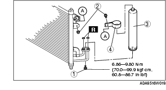

Receiver/drier removal/installation
1. Disconnect the negative battery cable.
2. Discharge the refrigerant from the system. (See REFRIGERANT RECOVERY.) (See REFRIGERANT CHARGING.)
3. Remove the condenser. (See CONDENSER REMOVAL/INSTALLATION.)
- • If moisture or foreign material enters the refrigeration cycle, cooling ability will be lowered and abnormal noise will occur. Always immediately plug all open fittings after removing any refrigeration cycle parts to keep moisture or foreign material out of the cycle.
4. Remove in the order indicated in the table. Do not allow compressor oil to spill.

5. Install in the reverse order of removal.
6. Perform the refrigerant system performance test. (See REFRIGERANT SYSTEM PERFORMANCE TEST.)